アイテム詳細
アイテムリストやランキングに表示されたアイテムタイトルをクリックすると、アイテム詳細画面が表示されます。
登録されたアイテムの詳細情報を閲覧できます。
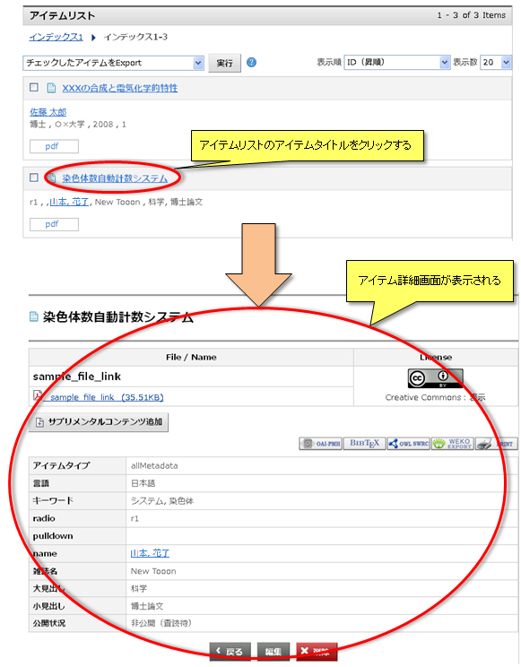
登録されたアイテムの詳細情報を閲覧できます。
メタデータ出力
表示中アイテムのメタデータをOAI-PMH形式, BIBTEX形式, SWRC形式で表示することができます。
また、WEKOインポート形式によるアイテムのエクスポートや詳細画面を印刷することができます。
[OAI-PMH]
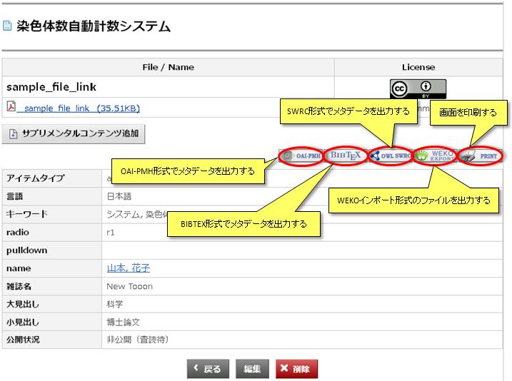
【注意事項】
また、WEKOインポート形式によるアイテムのエクスポートや詳細画面を印刷することができます。
[OAI-PMH]
をクリックすると別ウインドウが開き、メタデータがOAI-PMH形式で表示されます。
[BIBTEX]
をクリックすると別ウインドウが開き、メタデータがBIBTEX形式で表示されます。
[SWRC]
をクリックすると別ウインドウが開き、メタデータがSWRC形式で表示されます。
[エクスポート]
をクリックするとファイル保存ダイアログが起動し、WEKOインポート形式のファイルをダウンロードすることができます。
[印刷]
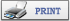をクリックすると、アイテム詳細の画面を印刷することができます。
【注意事項】
-
OAI-PMH, BIBTEX, SWRCの各形式による表示を行うにはアイテムタイプおよびメタデータのマッピング設定がされている必要があります。
マッピング設定についてはアイテムタイプ管理(OAH-PMHマップ)をご覧ください。
ファイルダウンロード
ファイルアイコンまたはファイル名のリンクをクリックするとファイル保存ダイアログが起動し、添付ファイルをダウンロードすることができます。
ユーザー権限ごとのファイルダウンロード可否は下記のようになっております。
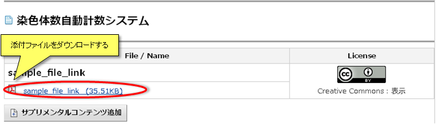
ユーザー権限ごとのファイルダウンロード可否は下記のようになっております。
| ユーザー権限 | 属性 | 公開状態 | ダウンロード可否 |
|---|---|---|---|
| ゲスト | ファイル | オープンアクセス | ○ |
| 公開日前 | × | ||
| 課金ファイル | オープンアクセス | ○ | |
| 公開日前 | × | ||
| 登録ユーザー | ファイル | オープンアクセス | ○ |
| 公開日前 | ○ | ||
| 課金ファイル | オープンアクセス | ○ | |
| 公開日前(価格有) | ○ | ||
| 公開日前(価格無) | × | ||
| 管理者 | ファイル | オープンアクセス | ○ |
| 公開日前 | ○ | ||
| 課金ファイル | オープンアクセス | ○ | |
| 公開日前(価格有) | ○ | ||
| 公開日前(価格無) | ○ |
マルチメディアコンテンツ表示
動画ファイル、Flashファイル、音楽ファイルのコンテンツを表示できます。
■動画ファイルのコンテンツ表示
対応形式：ASF, AVI, Matroska, NUT, FLV, WAV, QuickTime, 3GPP,
MPEG(mp4), SMAF(MMF), OpenMG, TwinVQ, Ogg/FLAC,
Monkey's Audio, WavPack, TTA
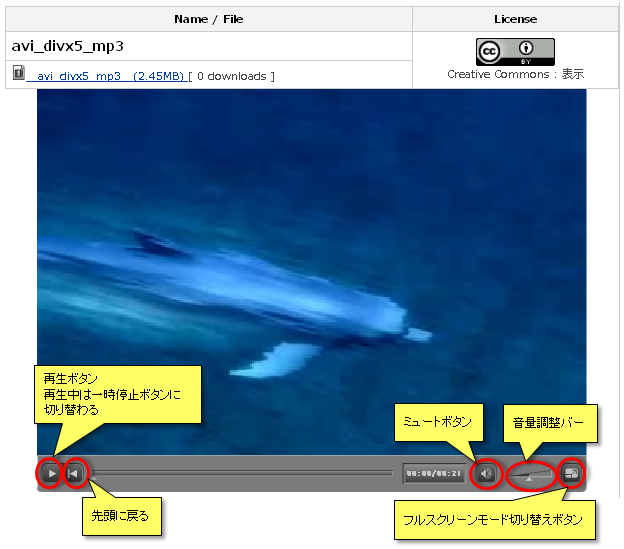
■Flashファイルのコンテンツ表示
対応形式：Flash
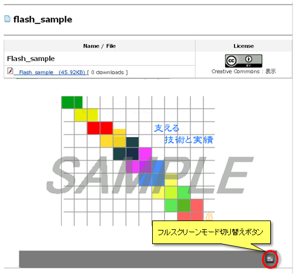
■音楽ファイルのコンテンツ表示
対応形式：MP3
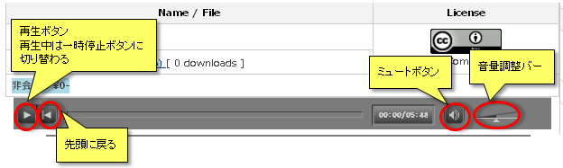
【注意事項】
■動画ファイルのコンテンツ表示
対応形式：ASF, AVI, Matroska, NUT, FLV, WAV, QuickTime, 3GPP,
MPEG(mp4), SMAF(MMF), OpenMG, TwinVQ, Ogg/FLAC,
Monkey's Audio, WavPack, TTA
■Flashファイルのコンテンツ表示
対応形式：Flash
■音楽ファイルのコンテンツ表示
対応形式：MP3
【注意事項】
- 自動再生には対応しません。
利用統計表示
アイテムの利用統計が閲覧出来ます。
また、アイテム詳細画面に、サイト開設時からのファイル毎のダウンロード回数が、リアルタイムで表示されます。
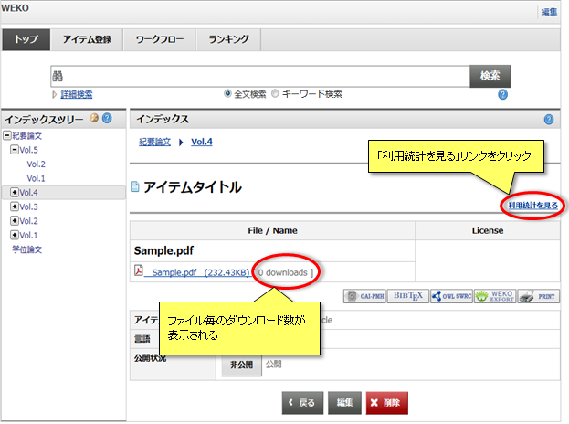
アイテム詳細画面の利用統計リンクをクリックすると、利用統計画面がポップアップで表示されます。
指定した年月におけるアイテムの閲覧回数とファイルごとのダウンロード回数の統計は初期表示に上位5件が「国別」「ドメイン別」で表示されます。
6件目以降はボタンおよびボタンで表示/非表示を切り替えます。
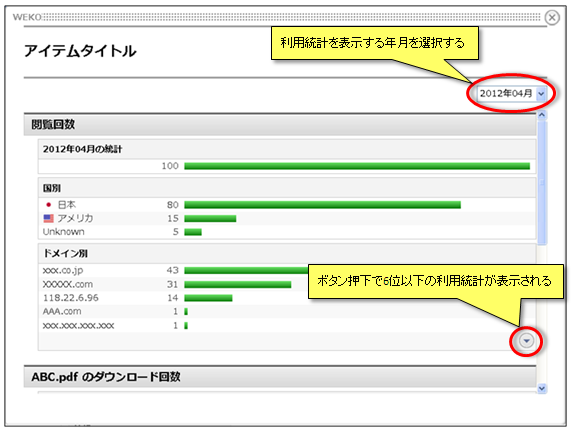
【注意事項】
また、アイテム詳細画面に、サイト開設時からのファイル毎のダウンロード回数が、リアルタイムで表示されます。
アイテム詳細画面の利用統計リンクをクリックすると、利用統計画面がポップアップで表示されます。
指定した年月におけるアイテムの閲覧回数とファイルごとのダウンロード回数の統計は初期表示に上位5件が「国別」「ドメイン別」で表示されます。
6件目以降はボタンおよびボタンで表示/非表示を切り替えます。
【注意事項】
- 利用統計の集計が行われている場合のみ「利用統計を見る」リンクが表示されます。 利用統計の集計方法についてはWEKO管理 データベース管理をご覧ください。
- 管理画面で利用統計リンクを表示する設定にしている場合のみ「利用統計を見る」リンクが表示されます。 利用統計リンク表示の設定方法についてはWEKO管理 利用統計リンク表示設定をご覧ください。
- 利用統計機能は月末締めで行われる集計結果を元にしているため、新規登録されてから月が切り替わっていないアイテムの利用統計を表示できません。
それらのアイテムについては以下のようなメッセージが表示されます。
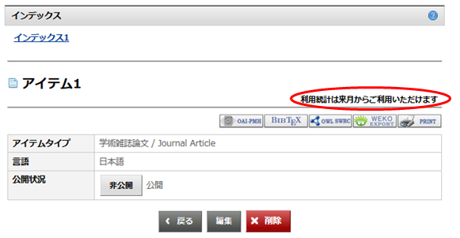
サプリメンタルコンテンツ
サプリメンタルWEKO(連携している外部のWEKO)に登録されているアイテムをサプリメンタルコンテンツとして、アイテムにリンクを登録することができます。
サプリメンタルコンテンツはアイテムタイプがメタデータ属性「サプリメンタルコンテンツ」を持つ場合に利用することができます。
サプリメンタルコンテンツはアイテムタイプがメタデータ属性「サプリメンタルコンテンツ」を持つ場合に利用することができます。
サプリメンタルコンテンツ登録
「サプリメンタルコンテンツ追加」ボタンをクリックするとポップアップが表示されます。
サプリメンタルコンテンツの追加方法として、新規登録か既存登録かを選択します。
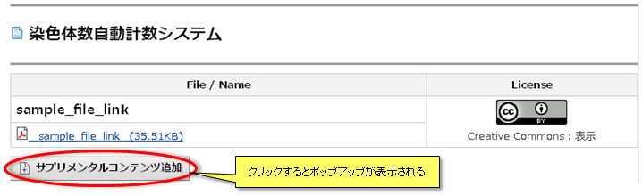
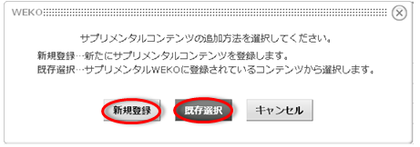
■新規登録
サプリメンタルコンテンツの追加方法として、新規登録か既存登録かを選択します。
■新規登録
サプリメンタルコンテンツの本体となるアイテムをサプリメンタルWEKOに登録します。
サプリメンタルWEKOでのアイテムの登録方法はアイテム登録と同様です。
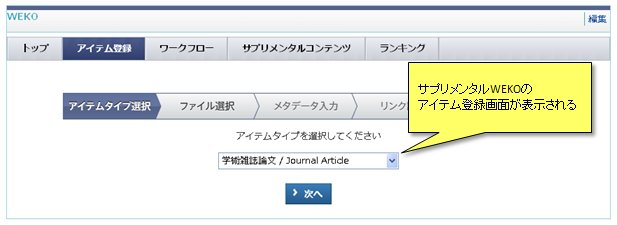
サプリメンタルWEKOへのアイテム登録が完了すると、サプリメンタルコンテンツとして自動的に登録されます。
査読待の表示がある場合は他のユーザーに公開されていません。
管理者の承認後に自動的に他のユーザーに公開されます。
自身が登録したサプリメンタルコンテンツの公開状態はサプリメンタルコンテンツタブで確認できます。
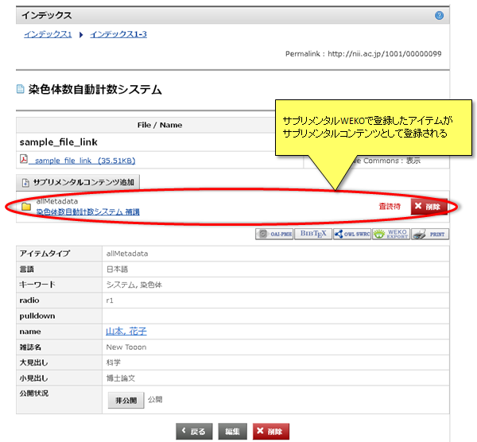
【注意事項】
■既存登録サプリメンタルWEKOでのアイテムの登録方法はアイテム登録と同様です。
サプリメンタルWEKOへのアイテム登録が完了すると、サプリメンタルコンテンツとして自動的に登録されます。
査読待の表示がある場合は他のユーザーに公開されていません。
管理者の承認後に自動的に他のユーザーに公開されます。
自身が登録したサプリメンタルコンテンツの公開状態はサプリメンタルコンテンツタブで確認できます。
【注意事項】
- サプリメンタルWEKO上でアイテムを登録するには、サプリメンタルWEKOへ別途ログインする必要があります。
サプリメンタルWEKOに登録されている既存のアイテムをサプリメンタルコンテンツとして登録します。
登録するアイテムのWEKO URLまたはパーマリンクURLをテキストボックスに入力し、「登録」ボタンをクリックするとパーマリンク先のアイテム情報を取得します。
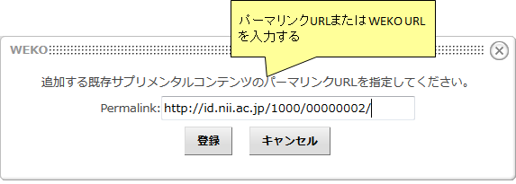
アイテムのパーマリンクURLはアイテム詳細画面に表示されています。
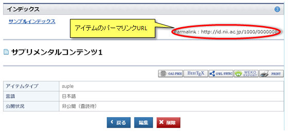
アイテムのWEKO URLは、アイテムリスト画面内のアイテム名にカーソルを合わし、右クリック→「リンクのURLをコピーで(A)」で取得できます。
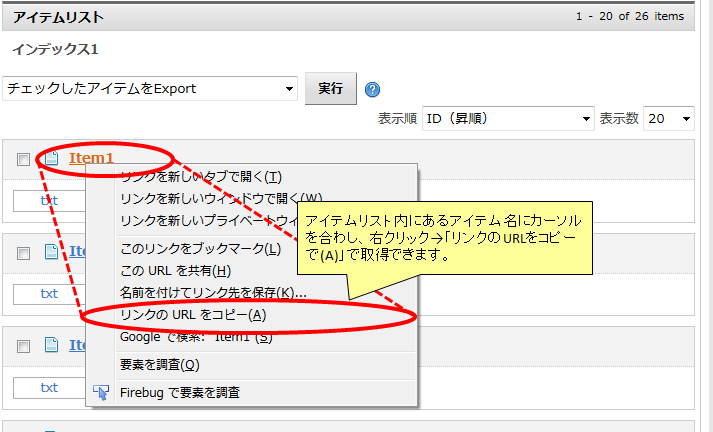
アイテムの情報取得が正常に完了すると、サプリメンタルコンテンツとして登録されます。
査読待の表示がある場合は他のユーザーに公開されていません。
管理者の承認後に自動的に他のユーザーに公開されます。
自身が登録したサプリメンタルコンテンツの公開状態はサプリメンタルコンテンツタブで確認できます。
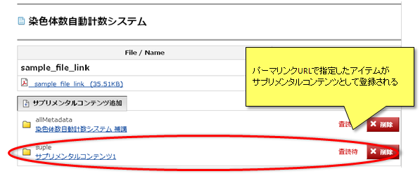
【注意事項】
登録するアイテムのWEKO URLまたはパーマリンクURLをテキストボックスに入力し、「登録」ボタンをクリックするとパーマリンク先のアイテム情報を取得します。
アイテムのパーマリンクURLはアイテム詳細画面に表示されています。
アイテムのWEKO URLは、アイテムリスト画面内のアイテム名にカーソルを合わし、右クリック→「リンクのURLをコピーで(A)」で取得できます。
アイテムの情報取得が正常に完了すると、サプリメンタルコンテンツとして登録されます。
査読待の表示がある場合は他のユーザーに公開されていません。
管理者の承認後に自動的に他のユーザーに公開されます。
自身が登録したサプリメンタルコンテンツの公開状態はサプリメンタルコンテンツタブで確認できます。
【注意事項】
- パーマリンクURLが表示されていないアイテムをサプリメンタルコンテンツとして登録することはできません。
サプリメンタルコンテンツ表示
表示中のアイテムに登録されている公開中のサプリメンタルコンテンツが表示されます。
また、自身が登録した査読待のサプリメンタルコンテンツも表示されます。
ファイルアイコンをクリックするとファイル保存ダイアログが起動し、サプリメンタルコンテンツに添付されているファイルをダウンロードできます。
タイトルをクリックするとサプリメンタルコンテンツ本体のアイテム詳細画面にジャンプします。
自身が登録したサプリメンタルコンテンツには「削除」ボタンが表示されます。
「削除」ボタンをクリックすると、確認用のポップアップが表示されます。
「OK」ボタンをクリックするとコンテンツ本体へのリンクが削除されます。
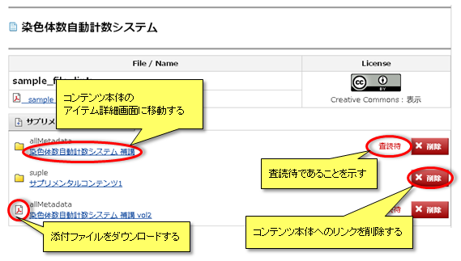
【注意事項】
また、自身が登録した査読待のサプリメンタルコンテンツも表示されます。
ファイルアイコンをクリックするとファイル保存ダイアログが起動し、サプリメンタルコンテンツに添付されているファイルをダウンロードできます。
タイトルをクリックするとサプリメンタルコンテンツ本体のアイテム詳細画面にジャンプします。
自身が登録したサプリメンタルコンテンツには「削除」ボタンが表示されます。
「削除」ボタンをクリックすると、確認用のポップアップが表示されます。
「OK」ボタンをクリックするとコンテンツ本体へのリンクが削除されます。
【注意事項】
-
コンテンツ本体へのリンクのみの削除ではコンテンツ本体は削除されません。
コンテンツ本体を削除する場合は、コンテンツ本体のアイテム詳細画面から削除を行う必要があります。
アイテム編集
アイテムの編集権限を持つ場合、「公開」ボタンまたは「非公開」ボタン、「編集」ボタン、「削除」ボタンが表示されます。
「公開」ボタンをクリックすると、アイテムの状態が"公開"になり、他のユーザーが閲覧できるようになります。
「非公開」ボタンをクリックすると、アイテムの状態が"非公開"になり、閲覧権限を持つユーザのみが閲覧できるようになります。
「編集」ボタンをクリックすると、アイテムのメタデータの編集を行うことができます。
アイテムの編集についてはアイテム登録をご覧ください。
「削除」ボタンをクリックすると、確認用のポップアップが表示されます。
「OK」ボタンをクリックするとアイテムを削除することができます。
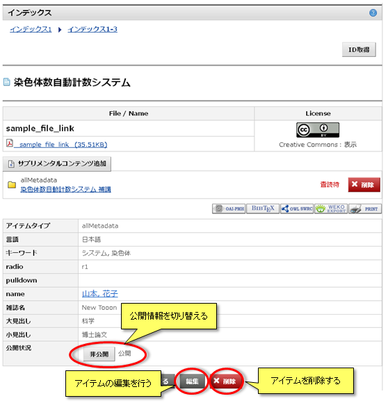
「公開」ボタンをクリックすると、アイテムの状態が"公開"になり、他のユーザーが閲覧できるようになります。
「非公開」ボタンをクリックすると、アイテムの状態が"非公開"になり、閲覧権限を持つユーザのみが閲覧できるようになります。
「編集」ボタンをクリックすると、アイテムのメタデータの編集を行うことができます。
アイテムの編集についてはアイテム登録をご覧ください。
「削除」ボタンをクリックすると、確認用のポップアップが表示されます。
「OK」ボタンをクリックするとアイテムを削除することができます。
検索ワード表示機能
アイテムがどのようなワードによって検索されているかを表示します。
検索に使われたワードの上位10件を表示します。
検索された回数に応じてワードの文字サイズが変化します。
WEKO管理画面より、表示・非表示の設定を行うことができます。
設定についてはWEKO管理をご覧ください。
キーワードのリンクを押下する事で、全文検索が行えます。
検索についてはキーワード検索をご覧ください。
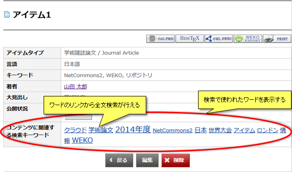
検索に使われたワードの上位10件を表示します。
検索された回数に応じてワードの文字サイズが変化します。
WEKO管理画面より、表示・非表示の設定を行うことができます。
設定についてはWEKO管理をご覧ください。
キーワードのリンクを押下する事で、全文検索が行えます。
検索についてはキーワード検索をご覧ください。